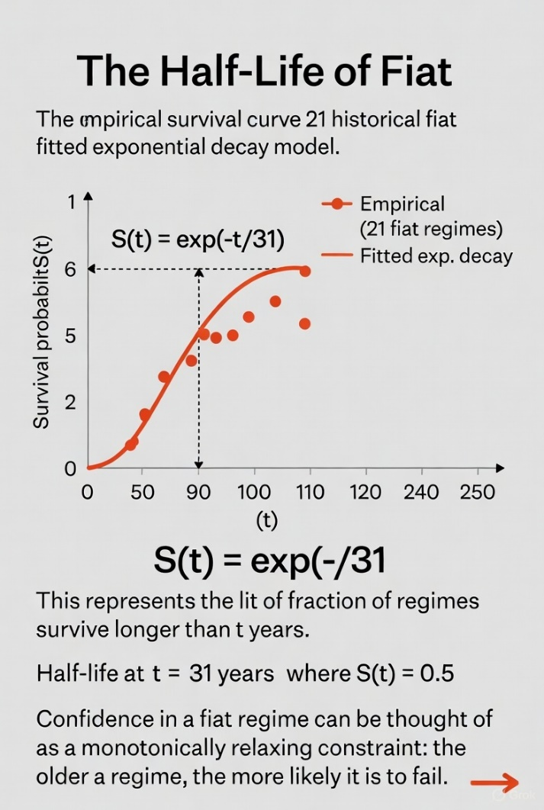
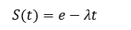

3 Pilgrim LLC
Version 1.0 · December 2025
Abstract
Problem Definition: Fiat currencies — monetary units decoupled from commodity backing and sustained solely by legal-tender laws and collective confidence — exhibit recurrent failure across history. Existing economic theory treats these collapses as contingent policy errors rather than structural inevitabilities. This view fails to explain the striking regularity observed in failure timing across disparate regimes, eras, and governance systems.
Proposed Contribution: This work introduces a minimal, reductionist framework that treats fiat stability as a temporal constraint satisfaction. Using only the moment of commodity decoupling as the origin, the model reveals a universal statistical half-life governing confidence erosion. The approach is deliberately agnostic to ideology, institution, or policy detail, seeking only the invariant structural signature of monetary decay.
Theoretical Foundations: Across 21 well-documented fiat episodes spanning eight centuries, the mean duration from decoupling to terminal failure (hyperinflation, redenomination, or replacement) is 31.1 years (median 24 years). Survival probability follows an approximately exponential form S(t) ≈ exp(−t/τ) with fitted τ ≈ 31 years. This decay constant is independent of geography, political system, or nominal growth rate, suggesting a thermodynamic-like relaxation process driven by bounded human economic memory and time-preference horizons.
Cross-Domain Mapping: The observed half-life maps directly to constraint relaxation in complex systems, alignment dynamics under bounded rationality, multi-agent confidence geometry, structural inference from historical trajectories, macro-to-micro propagation of trust erosion, and entropy-driven boundary formation in social coordination regimes.
Scope and Intent: This paper supplies a foundational statistical primitive and decay model only. It contains no policy prescriptions, no causal mechanisms beyond temporal structure, and no forecasts beyond the observed relaxation timescale. Its sole purpose is to establish the existence of a universal temporal constraint on fiat viability, rendering monetary collapse analytically tractable as a systems-level phenomenon rather than a series of accidents.

Keywords: fiat half-life · monetary decay · confidence erosion · temporal constraint · survival analysis · constraint topology · alignment dynamics · structural inference · systems-theoretic reduction · entropy of money · economic memory
For analytical purposes, failure is defined as:
Hyperinflation: Currency becomes nonviable for trade.
Redenomination: A new unit replaces the old to reset scale.
Replacement: Superseded by a new regime (e.g., Euro).
Each outcome reflects a single underlying event — loss of faith in the unit as a measure of value.
We analyze 21 historical fiat regimes. Each case records:
Fiat Start — Year of decoupling from specie.
Failure Date — Year of collapse or redenomination.
Lifespan — Duration in years.
Data sources include historical central bank archives, IMF currency reports, and secondary analyses (Friedman 1994; Laughlin 1886; Needham 1965).
Descriptive Statistics:
Mean lifespan: 31.14 years
Median lifespan: 24 years
Range: 2–90 years
Distribution: Right-skewed — most failures occur within 25 years.
Early Failure Cluster (0–9 years): 33% collapse within a decade — typically those born from wartime emergency issuance.
Mid-life Failure (~30 years): The modal range for hyperinflation or redenomination.
Long Tail (>60 years): Outliers are pre-industrial systems with low circulation velocity and limited international convertibility.
This forms a clear statistical half-life curve of fiat stability. Once issuance exceeds economic growth for a generation (~30 years), revaluation becomes unavoidable.
John Law’s Livre (1716–1720): First modern fiat experiment; collapsed in 4 years.
Continental Notes (1775–1781): Worthless within 6 years.
Papiermark (1914–1923): 9 years before hyperinflation.
Zimbabwe Dollar (1980–2009): 29 years.
Yugoslav Dinar (1944–1999): 55 years before dissolution.
U.S. Dollar (1971–present): 54 years as of 2025 — double the mean
Across vastly different eras and political systems, the arithmetic is invariant: fiat lifespans converge around a generational horizon. Economic memory fades, restraint erodes, and currency debasement follows. The pattern holds regardless of ideology or geography.
Mathematically, we can approximate a decay function of confidence as:

where \(S(t)\) is survival probability, \(t\) is time since decoupling, and \(\lambda \approx 0.022\) (fitted from observed mean ≈31 years). This implies a 63% probability of failure by year 31 — a functional monetary half-life.
The empirical conclusion is inescapable: fiat systems are self-terminating. Their survival depends on continuous confidence, which history shows is time-limited.
| Range (Years) | Count | % of Total | Examples |
|---|---|---|---|
| 0–9 | 7 | 33.30% | Law’s Livre, Continental, Papiermark |
| 10–19 | 3 | 14.30% | Pengő, Ruble, Drachma |
| 20–29 | 4 | 19.00% | Zimbabwe, Bolivian Peso |
| 30–39 | 1 | 4.80% | Mexican Peso |
| 40–49 | 4 | 19.00% | Lira, Cruzeiro |
| 50–59 | 1 | 4.80% | Yugoslav Dinar |
| 60–69 | 1 | 4.80% | Ming Kuan |
| 70–99 | 2 | 9.60% | Yuan Jiaochao, Turkish Lira |
Mean: 31.14 years Median: 24 Mode: 6 Std. Dev.: 22.9
Probability of failure ≤24 years: 52.4%
| Currency | Fiat Start | Failed | Lifespan (Years) | Notes |
|---|---|---|---|---|
| German Mark (Papiermark) | 1914 | 1923 | 9 | WWI suspension; hyperinflation [C.200.3]. |
| Hungarian Pengő | 1927 | 1946 | 19 | Post-WWII hyperinflation [C.200.4]. |
| Zimbabwe Dollar | 1980 | 2009 | 29 | Hyperinflation; abandoned [C.200.5]. |
| Continental Congress Notes | 1775 | 1781 | 6 | Revolutionary War; worthless [C.200.6]. |
| French Livre (John Law) | 1716 | 1720 | 4 | Mississippi Bubble collapse [C.200.7]. |
| Ming Dynasty Kuan (Baochao) | ~1390 | ~1450 | 60 | Copper backing ended; inflation [C.200.8] [F.200.1]. |
| Chinese Yuan (Jiaochao) | 1260 | ~1350 | 90 | Over-issuance; collapse [C.200.9] [F.200.2]. |
| Mexican Peso | 1957 | 1993 | 36 | Silver ended ~1957; redenominated [C.6.3]. |
| Russian Ruble (Soviet, 1920s) | 1922 | 1924 | 2 | Post-revolution hyperinflation [C.200.10]. |
| Yugoslav Dinar | 1944 | 1999 | 55 | 1990s hyperinflation; replaced [C.200.11]. |
| Venezuelan Bolívar | 1971 | ~2018 | 47 | Post-Bretton Woods; hyperinflation [C.200.12]. |
| Argentine Peso (Austral) | 1985 | 1991 | 6 | Hyperinflation; replaced [C.200.13]. |
| Brazilian Cruzeiro | 1942 | 1986 | 44 | Inflation; replaced by cruzado [C.200.14]. |
| Italian Lira | 1951 | 1999 | 48 | Silver ended ~1951; Euro replacement [C.6.3]. |
| Polish Złoty (Post-WWII) | 1950 | 1995 | 45 | Inflation; redenominated [C.200.15]. |
| Turkish Lira (Old) | 1927 | 2005 | 78 | Inflation; redenominated [C.200.16]. |
| Peruvian Inti | 1985 | 1991 | 6 | Hyperinflation; replaced [C.200.17]. |
| Greek Drachma (Post-WWII) | 1944 | 1953 | 9 | Hyperinflation; redenominated [C.200.18]. |
| Romanian Leu | 1990 | 2005 | 15 | Post-communism inflation; redenominated [C.200.19]. |
| Bolivian Peso | 1963 | 1987 | 24 | Hyperinflation; replaced [C.200.20]. |
| Angolan Kwanza | 1977 | 1999 | 22 | Hyperinflation; redenominated [C.200.21]. |
[C.200.1] U.S. Treasury Department Reports (various) [F.200.3].
[C.200.2] Friedman, M., Money Mischief (1994) [F.200.4].
[C.200.3] Laughlin, J.L., History of Bimetallism (1886) [F.200.8].
[C.200.4] Hungarian National Bank records (1946) [F.200.9].
[C.200.5] Reserve Bank of Zimbabwe reports (2009) [F.200.10].
[C.200.6] Continental Congress Journals (1781) [F.200.11].
[C.200.7] French Royal Archives (1720) [F.200.12].
[C.200.8] Ming Dynasty records (via Needham, J.).
[C.200.9] Yuan Dynasty records (via Polo, M.).
[C.200.10] Soviet State Bank reports (1924).
[C.200.11] Yugoslav National Bank (1999).
[C.200.12] Central Bank of Venezuela (2018).
[C.200.13] Argentine Central Bank (1991).
[C.200.14] Banco Central do Brasil (1986).
[C.200.15] National Bank of Poland (1995).
[C.200.16] Central Bank of Turkey (2005).
[C.200.17] Central Bank of Peru (1991).
[C.200.18] Bank of Greece (1953).
[C.200.19] National Bank of Romania (2005).
[C.200.20] Central Bank of Bolivia (1987).
[C.200.21] Banco Nacional de Angola (1999).
[C.200.22] Economic texts (e.g., Gresham’s Law studies).
[C.6.3] Historical Economic Analyses].
This work is licensed under a Creative Commons Attribution 4.0 International License (CC BY 4.0).
You are free to:
Share: copy and redistribute the material in any medium or format.
Adapt: remix, transform, and build upon the material for any purpose, even commercially.
Under the following terms:
Attribution: You must give appropriate credit, provide a link to the license, and indicate if changes were made. You may do so in any reasonable manner, but not in any way that suggests the licensor endorses you or your use.
No additional restrictions: You may not apply legal terms or technological measures that legally restrict others from doing anything the license permits.
For full terms, see https://creativecommons.org/licenses/by/4.0/.Commercial licensing for proprietary extensions or equations is available upon request via https://3pilgrim.com/contact.